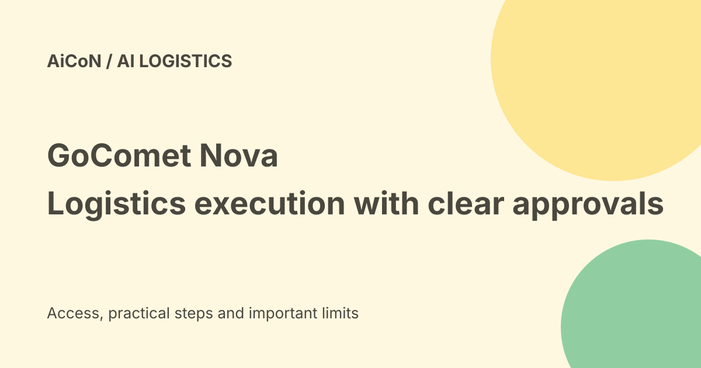

GoComet Nova: logistics execution, approvals and enterprise limits
GoComet announced Nova as an AI-native execution layer for enterprise logistics. Its current product page describes mapping a company’s processes across systems, partners, rules and approvals. Automation that can book freight or contact partners needs clear authority and review, not only a useful summary.

What does an execution layer mean?
Ordinary logistics software can record a delay or show a dashboard. An execution layer aims to carry out the follow-up needed to move the work forward.
GoComet describes Nova as a configuration layer above standard products, holding a company's own process rather than forcing every operation into one fixed template.
What was shown at Odyssey?
The company release says its Singapore gathering included a freight journey from planning to payment. It describes inbox monitoring, detecting a document error, handling a service ticket and comparing contract and spot quotes.
The release also describes booking a shipment under a cost guardrail, with human sign-off where needed. These are vendor demonstration claims, not an independent proof that every customer's workflow is fully automated.
Dates should be read carefully
The release was published on 24 September but says the Odyssey event happened the previous week. The earlier archive post used launched-today wording.
This guide treats 24 September as the announcement date, not a verified exact date for every demonstration or customer deployment.
Processes have branches
Nova's page describes workflows with different approval paths. Some activities need multiple approvals, while routine ones may skip certain steps.
The correct distinction comes from the company's actual rules. An AI tool should not invent who can approve a charge, shipment or supplier change merely because it knows how to perform the action.
Partners use different channels
GoComet describes bringing email, WhatsApp and partner interactions into one process with deadlines. That can reduce information lost between systems.
It also creates representation risk: a message to a broker or customer can be read as the company's own words. Verify recipients, facts, templates and auto-send scope before enabling communications.
Data and evidence
The page describes using part catalogues, plant schedules, supplier scores and contract terms. It also claims agents show evidence and refuse answers without citations.
Source references help review, but they can still support a wrong interpretation. Confirm the contract version, currency, dates and shipment identifiers behind a proposed action.
Costs and guardrails
A freight quote can include more than the headline rate. Review surcharges, currency, routing, delivery commitments and cancellation costs before confirming.
A cost guardrail is a configured limit, not proof that every charge is approved. Decide what the system may compare, hold or book, and which actions still need a person.
Deployment claim
The current page advertises a six-week first-deployment path and continued adaptability. That is a vendor implementation claim.
Actual timing depends on the customer's process, integrations, data and acceptance work. Get a scoped plan before treating that schedule as a deadline your team can guarantee.
Price and free-versus-paid verdict
No exact public subscription price, free individual plan or Indian checkout total was established in the checked product and release pages.
This is an enterprise logistics platform, not a free personal parcel tracker. Ask for the actual licence, integration, support and usage terms before committing company resources.
India fit
An Indian supply-chain team should check local carriers, ports, tax documents, partner workflows and required languages. Global customer and shipment figures do not establish support for every domestic operation.
The company cites hundreds of enterprises and tens of millions of shipments as its broader experience. Those are vendor figures, not an independent audit of Nova-specific production use.
Private data and access
Inbox access and freight documents can reveal contracts, customer identities and commercial terms. Inspect data retention, provider access, logs, permissions and revocation before connection.
Start with approved test material. A logistics problem does not authorize exporting every email or giving unrestricted access to payment and booking systems.
A careful pilot
- Choose one workflow with a clear owner.
- Map its actual rules and approval paths.
- Limit accounts and partner access.
- Check evidence against source records.
- Keep paid bookings and external messages behind agreed approval.
- Test exceptions and failed handoffs.
- Measure completed work, mistakes and review effort.
- Confirm cost and data terms before expansion.
No freight booking, company account or partner message was operated for this guide.
What changed since the original post?
We separate the release date from the event date and use the current adaptive-workflow description. We add spending, communication and evidence checks instead of treating execution automation as unconditional authority.
Frequently asked questions
Is this for ordinary parcel tracking?
The described offering is enterprise logistics.
Does a demo prove my process is supported?
No. Confirm a scoped pilot.
Can it book without limits?
Only the customer's actual approved rules should define that authority.
Sources: Current Nova product workflow · GoComet issuer release and demonstration description. Checked 7 October 2026.